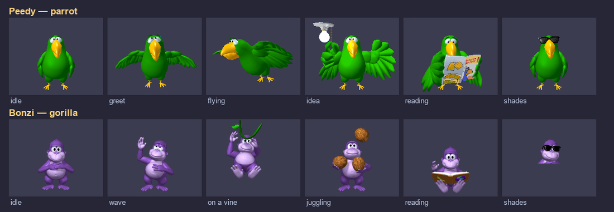
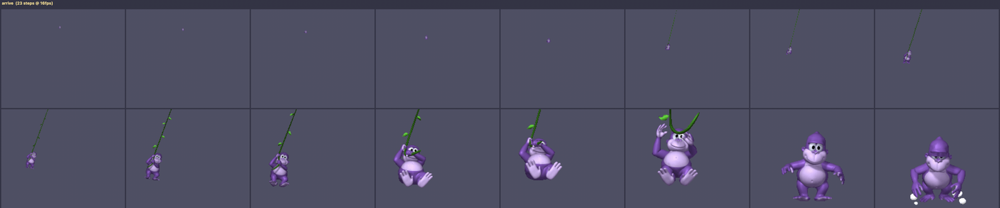
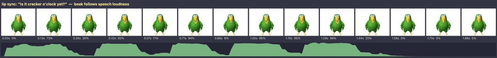
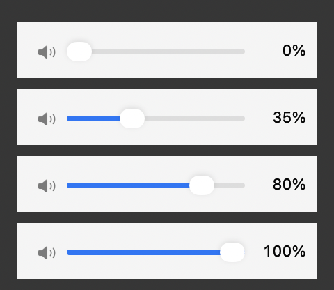

A parrot and a gorilla who live on your Mac's desktop. They walk around, do bits, sing in tune, and argue with each other.

The Bonzi idea, minus the part everyone remembers it for: no network access, no analytics, no bundled anything, no browser changes, no upsell. They are windows that draw an animal. Quit them from the menu bar and they're gone.
Energy that rises with attention and decays without it. They notice your cursor, blink on their own clock, get bored of being poked, and settle down when you leave the keyboard.
Real melodies, in tune, by imposing pitch on the synthesised voice rather than asking it to sing — which does not work.
23 exchanges between a fussy parrot and an unbothered gorilla. Neither wins.
A slider that's theirs alone, independent of the system volume — and it doesn't change how their mouths move.
Peedy: You're very still.
Bonzi: Thank you.
Peedy: It wasn't a compliment.
Bonzi: I'm taking it as one.
| Peedy | Bonzi | |
|---|---|---|
| Register | quick, fussy, theatrical | slow, heavy, unbothered |
| Voice | Fred, pitched up | Ralph, pitched down |
| Entrance | flies in from the distance | swings in on a vine |
| Bits | newspaper, notepad, telescope, ribbon | banana, coconuts, globe, a puff of smoke |

macOS 11 Big Sur or later, on Apple Silicon, plus the Xcode command line tools. A clone builds and runs directly — the sprites are included.
git clone https://github.com/shadi0077/desktop-buddies.git
cd desktop-buddies
./build.sh && open build/Peedy.appThere's no Xcode project. build.sh compiles the sources with
swiftc and assembles the .app itself.
Each line is rendered to PCM before anything plays, which gives its exact duration and a loudness envelope. The envelope picks a mouth shape every frame. Linear loudness turned out to be bimodal for speech — the beak just slammed between shut and wide — so it's mapped to dB over a 30 dB window, which spreads the seven shapes evenly.

Letting pitchMultiplier carry a melody gives every note a 5–31
semitone swoop, because the synthesiser applies sentence intonation to each
isolated word. Interval errors reached 3.4 semitones and the tune was
unrecognisable. Time-domain PSOLA — cutting one grain per glottal pulse and
laying them down again at exactly the target period — brings that to
0.05 semitones.

Applied as gain on the player node rather than baked into the render, so it takes effect mid-sentence — and the lip sync is unchanged by it. The beak moves identically at 5% and 100%.